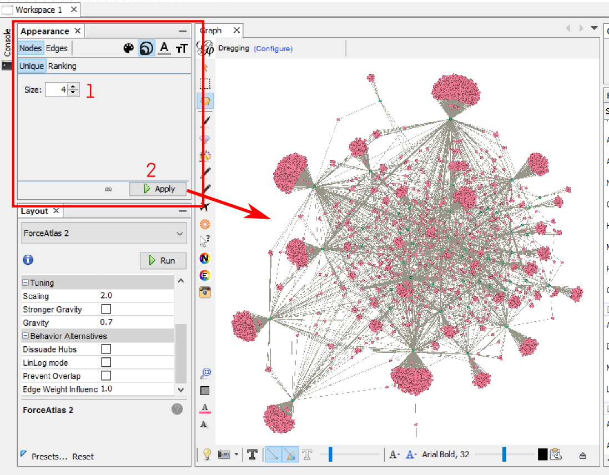
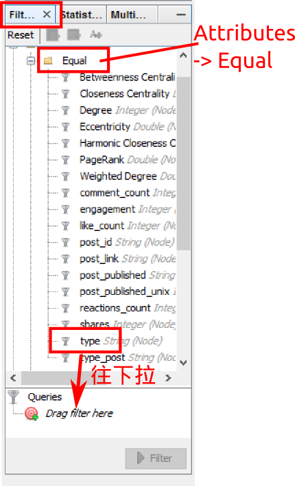
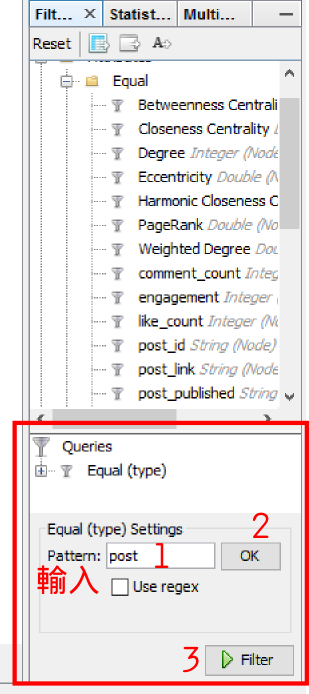
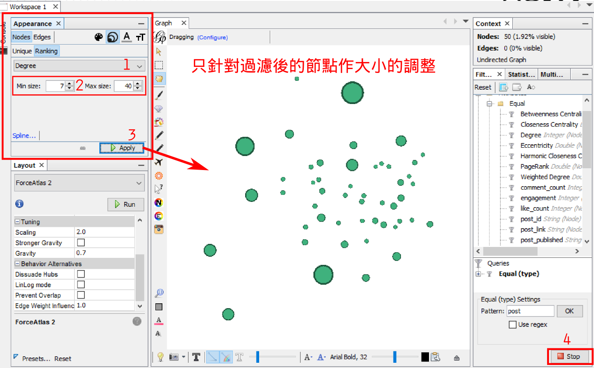
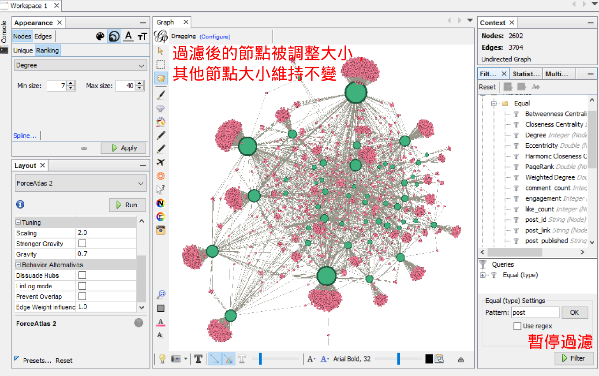

過濾與設計的搭配使用
這部分要說明的是如何針對部分節點作呈現樣式的調整。以下例子是針對 post (文) 的大小作調整，同時不改變 user 的大小。
首先，對所有節點設成同樣的大小，一般會先設定成更小的值(例如：4)

在右手邊的工具欄中，切換到 Filter 頁籤，在底下的樹狀圖中選擇 Attributes-->Equal，然後找到 Type (欄位，記錄每一個節點是什麼樣的節點)，將 Type 拉到下面的空間去。

在下面的空間會出現這些選項。在 Equal Settings 下的欄位，輸入 post (要選擇的值，若要過濾出使用者則輸入 user)，點 OK 按鈕之後，點 Filter 按鈕開始過濾。

中間的網路圖只剩下過濾下來的節點。這時候可以開始設定這些節點的大小。在左邊的工具欄，切換到 Nodes-->Ranking，選擇欄位名稱(Degree)，設定最小及最大的大小。按 Apply 後，過濾後的節點的大小被調整了。
最後，點 Stop 暫停、完成過濾，以顯示所有節點。

完成。
